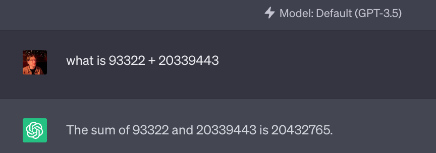

The unreasonable effectiveness of ChatGPT at adding numbers
One of the thing that vexes me the most about GPT-* is how it can possibly do math. I feel quite strongly that this should be impossible. LLMs are supposed paste together snippets of text from their training data into coherent-looking nonsense that may occasionally, by coincidence, make sense. If I ask the chat bot a math problem that does not occur in the training data, I strongly expect that it should not be able to provide the right answer unless that math problem happens to appear in the training data. And yet, I’ve observed in my messing around with these things that they seem unreasonably good at certain kinds of math problems that I would expect them not to be. And I’m not talking about tough ones; I’m just talking about basic arithmetic, like adding numbers.

In the above screenshot ChatGPT correctly gives the sum of a pair of numbers that I picked out of thin air. How did it do this? I can imagine a few hypotheses.
- The Strong Stochastic Parrot Hypothesis holds that the LLM can only produce the right answer as long as that problem occurs in its training data.
- The Emergent Computation Hypothesis holds that LLMs have some emergent ability to add numbers. By this I mean that the LLM is executing some computation that it has not been explicitly programmed to perform.
- The OpenAI Funny Business Hypotheses holds that OpenAI is plugging ChatGPT into some other calculator on the back end that handles math problems for the language model.
How can I tell which of these it is? After all, the training dataset for the GPT models is famously large. Maybe it does happen to contain the fact that 93,322 + 20,339,443 = 20,432,765. Without OpenAI opening its training data to the public for inspection, there’s really no way to check.
But we don’t actually need to look at the training data to falsify the Strong Stochastic Parrot Hypothesis. For any individual math problem that we ask GPT to perform, there’s no way to tell if it shows up in the training data. But we can put an upper bound on the number of math problems that the training data can possibly contain. Although the training data is big, the set of possible math problems is much bigger, and we can easily find a finite set of math problems that is larger than the training data.
For example, consider the set of additions \(a+b\) with \(a\) and \(b\) both between 1 and 10 million. There are 10 million times 10 million = \(10^{14}\) of those.